KB Wellness Studio
Let's Relax!
Det bästa massage- & välbefinnande-centret
Välkommen till KB Wellness Studio Jag erbjuder professionella massagebehandlingarsom anpassas efter dina individuella behov, oavsett om du vill mjuka upp spända muskler, minska vardagens stress, återhämta dig efter träning eller helt enkelt unna dig en stund för dig själv.
Med erfarenhet av massage sedan 2012, professionell utbildning vid Axelsons Institute i Sverige och erfarenhet från den exklusiva spamiljön på Banyan Tree Bangkok strävar jag efter att ge dig en personlig och omsorgsfull upplevelse i en lugn och välkomnande miljö.
Upplev beröringens konst och låt oss ta hand om dig. Slappna av, Föryngra, Återställ 💆🏻♀️
Jag erbjuder professionell massage med ett personligt bemötande och fokus på ditt välbefinnande. Med erfarenhet sedan 2012 och kunskap inom olika massagetekniker anpassar jag varje behandling efter dina behov - oavsett om du söker avkoppling, vill mjuka upp spända muskler eller återhämta dig efter träning.
Din flykt från stress börjar här
📍 Luntmakargatan 15 (Inne i Aka Beauty) - Bara 9 minuters promenad från Arlanda Express & T-centralen
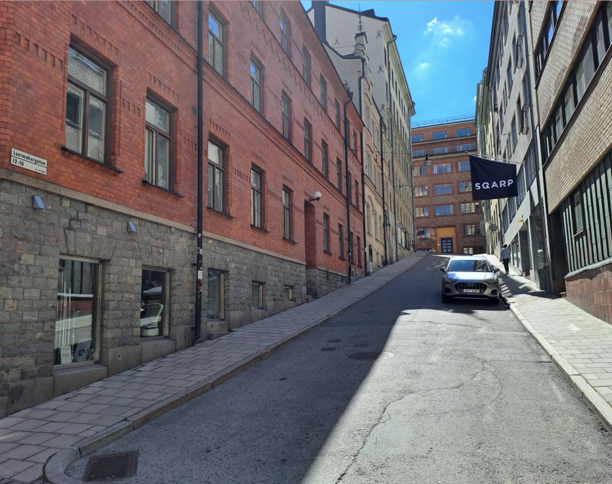
🌸 Kampanj 🌸

🌸 Öppningserbjudandet 🌸
Erbjudande vid återöppningen klassiska massagebehandlingar (50 min) för endast 595 kr. (ordinarie pris 795 kr.) under 1-15 november 2026.
Erbjudandet gäller endast för bokningar via boka.seKampanjkod: relax och kan inte kombineras med andra erbjudanden eller rabatter.
Boka behandling
Behandlingar
KB Wellness Studio erbjuder ett brett utbud av behandlingar, bland annat ansiktsbehandlingar, Djupgående massage med stretching, reflexologi (fotmassage), behandling för kontorssyndrom (rygg, nacke, huvud och axlar), yogamassage, aromaterapi samt massage med varm kokosolja.
-
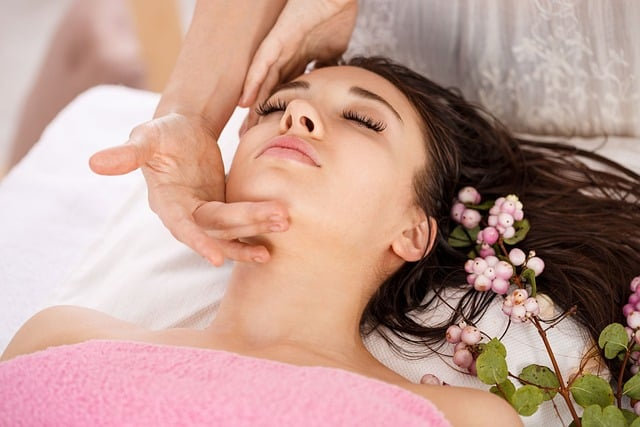
Naturlig facelift – Ansiktsmassage
Ge ditt ansikte en stund av avkoppling med en naturlig, lyftande ansiktsmassage som hjälper dig att släppa spänningar och återfå en fräsch känsla.
495 kr. (30 min)
795 kr. (60 min) -
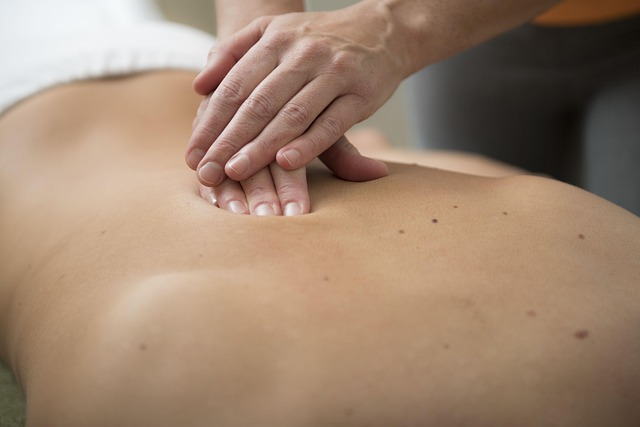
Klassisk massage
Klassisk massage är en traditionell svensk massageform som hjälper till att mjuka upp spända muskler, lindra muskelspänningar och främja avslappning. Med långa, mjuka strykningar, knådningar och andra klassiska massagetekniker får kroppen möjlighet att slappna av och återhämta sig.
395 kr. (20 min)
495 kr. (30 min)
795 kr. (60 min) -
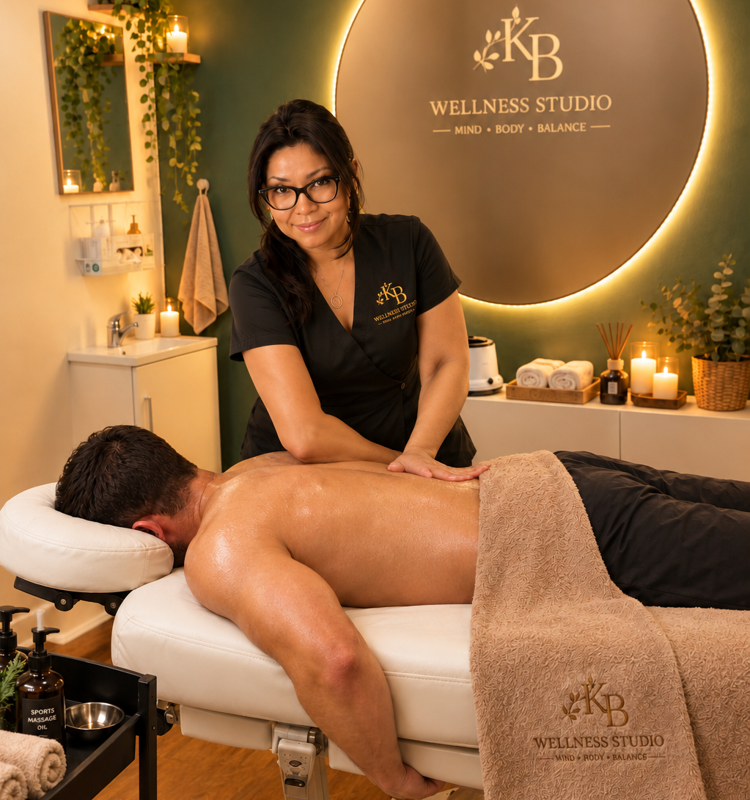
Deep Tissue & Stretch Massage (Djupgående massage med stretching)
Ge kroppen den omtanke den förtjänar med en djupgående massage som hjälper till att minska muskelspänningar, mjuka upp stela muskler och förbättra rörligheten.
495 kr. (20 min)
595 kr. (30 min)
895 kr. (60 min) -
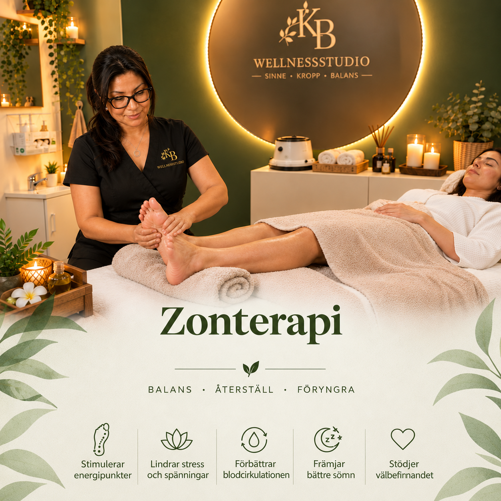
Zonterapi
Zonterapi använder olika beröringstekniker på specifika punkter på fötterna som verkar på energibanor liknande akupunktur för att normalisera kroppsfunktioner, återställa energi i hela kroppen och bibehålla optimal hälsa.
495 kr. (20 min)
595 kr. (30 min)
895 kr. (60 min) -
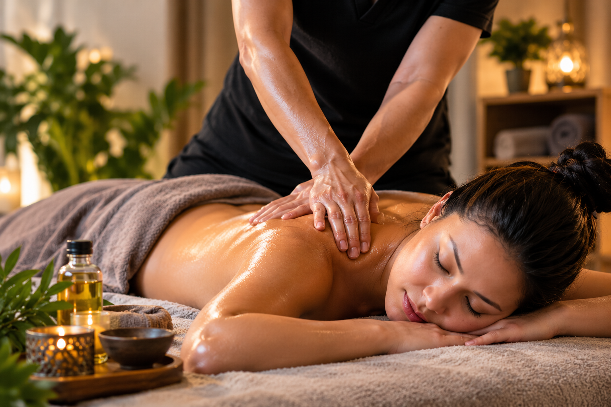
Huvud, Nacke, Axlar och Rygg (Kontorssyndrom)
Ge kroppen den omtanke den förtjänar med en djupgående massage som hjälper till att minska muskelspänningar, mjuka upp stela muskler och förbättra rörligheten.
495 kr. (20 min)
595 kr. (30 min)
895 kr. (60 min) -
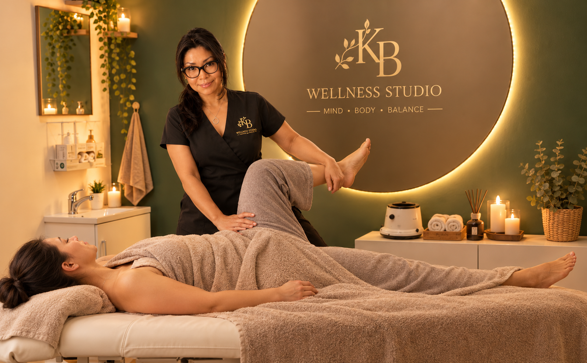
Yogamassage
Kombinerar akupressur och assisterade yogaställningar medan man palperar och tummar längs kroppens energilinjer och tryckpunkter.
895 kr. (60 min)
1295 kr. (90 min) -
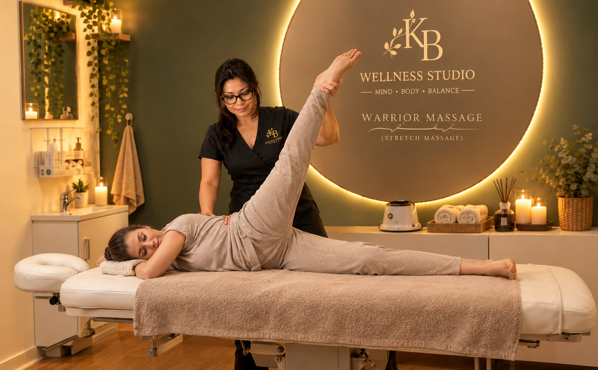
Warrior Massage (Stretchmassage)
Stretchmassage inkluderar tekniker som djupgående massage, triggerpunktsbehandling, myofascial release och yogamassage. Handlar om helkropps stretching för att minska din muskeltrötthet och smärta.
495 kr. (30 min)
795 kr. (60 min) -
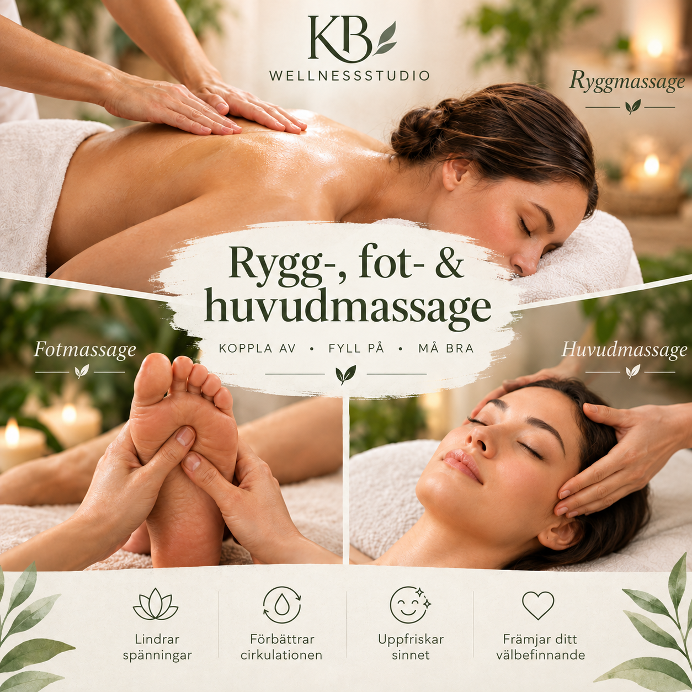
Rygg-, fot- och huvudmassage
Njut av en avkopplande kombination av rygg-, fot- och huvudmassage som hjälper till att mjuka upp spända muskler och främja ditt allmänna välbefinnande. Mjuka men effektiva massagetekniker hjälper till att stimulera blodcirkulationen, lösa upp spänningar och ge en skön känsla av avkoppling och ny energi.
895 kr. (60 min)
1295 kr. (90 min) -
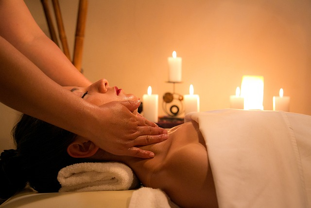
Varm Oljemassage
Den varma kokosoljan gör denna massage ännu mer avslappnande, är full av fördelar då den är läkande och närande för huden.
595 kr. (30 min)
895 kr. (60 min) -
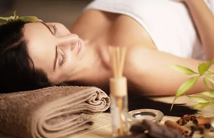
Aromaterapi
Denna terapi har visat sig främja avslappning och en känsla av lugn i kroppen, vilket är halva arbetet gjort för att läka. För avkoppling och stresslindring.
595 kr. (30 min)
895 kr. (60 min) -
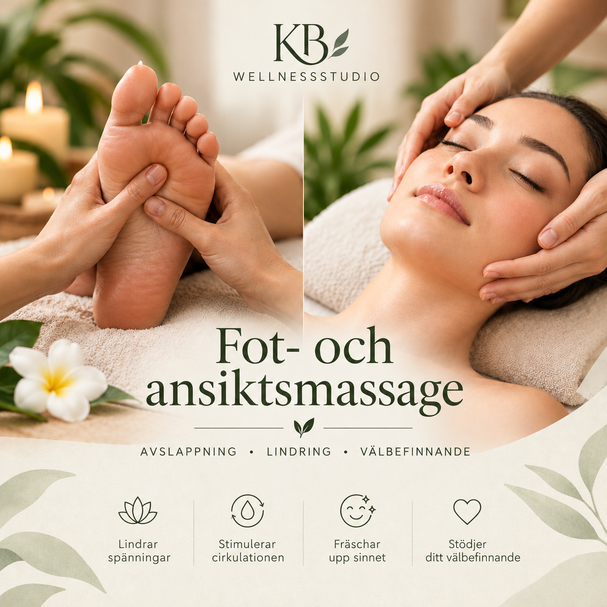
Fot- och ansiktsmassage
Njut av en avkopplande kombination av fot- och ansiktsmassage som hjälper dig att varva ner och återfå känslan av välbefinnande. Mjuka massagetekniker hjälper till att lindra spänningar, stimulera blodcirkulationen och ge en uppfriskande och avslappnande känsla.
595 kr. (30 min)
895 kr. (60 min)